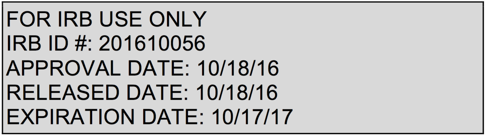

The testing effect: Dual benefits of dual processes
What are we trying to learn in this research?
This project seeks to better understand the processes that lead to the benefits of testing (relative to not testing and/or restudying) on later memory. We aim to reveal the ways in which several processes change as a function of delay between initial studying and testing and final testing.
Why is this important to scientists or the general public?
This research is undertaken with the logic that understanding how testing leads to better memory of material may equip researchers with the ability to make better predictions as to how prior tests will affect later tests. Further, a better understanding of the benefits of testing on memory may lead to better advice for people hoping to reap the benefits of testing in varied contexts.
Where can I learn more?
Chan, J. C., & McDermott, K. B. (2007). The testing effect in recognition memory: a dual process account. Journal of Experimental Psychology: Learning, Memory, and Cognition, 33(2), 431-437.
Roediger, H. L., & Karpicke, J. D. (2006). Test-enhanced learning taking memory tests improves long-term retention. Psychological science, 17(3), 249-255.
What if I have questions?
You may email any questions or set up an appointment with us. Please email Ruth Shaffer at ruthieshaffer@wustl.edu
When you are finished reading this sheet, you may simply close out of this window. As a reminder, PLEASE ENTER THE FOLLOWING CODE WHEN YOU SUBMIT THIS HIT: 24102